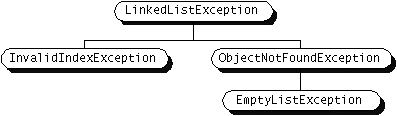

Feedback Form
|
|
Start of Tutorial > Start of Trail > Start of Lesson |
Search
Feedback Form |
When you design a package of Java classes that collaborate to provide some useful function to your users, you work hard to ensure that your classes interact well together and that their interfaces are easy to understand and use. You should spend just as much time thinking about and designing the exceptions that your classes throw.Suppose you are writing a linked list class that you're planning to distribute as freeware. Among other methods, your linked list class supports these methods:
objectAt(int n)- Returns the object in the
nth position in the list.firstObject- Returns the first object in the list.
indexOf(Object n)- Searches the list for the specified
Objectand returns its position in the list.
Because many programmers will be using your linked list class, you can be assured that many will misuse or abuse your class and its methods. Also, some legitimate calls to your linked list's methods may result in an undefined result. Regardless, in the face of errors, you want your linked list class to be as robust as possible, to do something reasonable about errors, and to communicate errors back to the calling program. However, you can't anticipate how each user of your linked list class will want the object to behave under adversity. So, often the best thing to do when an error occurs is to throw an exception.Each of the methods supported by your linked list might throw an exception under certain conditions, and each method might throw a different type of exception than the others. For example,
But what type of exception should each method throw? Should it be an exception provided with the Java development environment? Or should you create your own?
objectAt- Throws an exception if the integer passed into the method is less than 0 or larger than the number of objects currently in the list.
firstObject- Throws an exception if the list contains no objects.
indexOf- Throws an exception if the object passed into the method is not in the list.
When faced with choosing the type of exception to throw, you have two choices:You should go to the trouble of writing your own exception classes if you answer "yes" to any of the following questions. Otherwise, you can probably get away with using someone else's:
- Use one written by someone else. The Java development environment provides a lot of exception classes that you could use.
- Write one of your own.
- Do you need an exception type that isn't represented by those in the Java development environment?
- Would it help your users if they could differentiate your exceptions from those thrown by classes written by other vendors?
- Does your code throw more than one related exception?
- If you use someone else's exceptions, will your users have access to those exceptions? A similar question is: Should your package be independent and self-contained?
Your linked list class can throw multiple exceptions, and it would be convenient to be able to catch all exceptions thrown by the linked list with one exception handler. Also, if you plan to distribute your linked list in a package, all related code should be packaged together. Thus for the linked list, you should create your own exception class hierarchy.
The following diagram illustrates one possible exception class hierarchy for your linked list:
 LinkedListExceptionis the parent class of all the possible exceptions that can be thrown by the linked list class. Users of your linked list class can write a single exception handler to handle all linked list exceptions with acatchstatement like this:Or, users could write more specialized handlers for each subclass ofcatch (LinkedListException) { . . . }LinkedListException.
The diagram above does not indicate the superclass of theLinkedListExceptionclass. As you know, Java exceptions must beThrowableobjects (they must be instances ofThrowableor a subclass ofThrowable). So, your temptation might be to makeLinkedListExceptiona subclass ofThrowable. However, thejava.lang packageprovides twoThrowablesubclasses that further divide the type of problems that can occur within a Java program:Errors andExceptions. Most of the applets and applications that you write will throw objects that areExceptions. (Errors are reserved for serious hard errors that occur deep in the system.)Theoretically, any
Exceptionsubclass could be used as the parent class ofLinkedListException. However, a quick perusal of those classes show that they are either too specialized or completely unrelated toLinkedListExceptionto be appropriate. Thus, the parent class ofLinkedListExceptionshould beException.Because runtime exceptions don't have to be specified in the
throwsclause of a method, many packages developers ask: "Isn't it just easier if I make all of my exception inherit fromRuntimeException?" The answer to this question is covered in detail on Runtime Exceptions--The Controversy. The bottom line is that you shouldn't subclassRuntimeExceptionunless your class really is a runtime exception! For most of you, this means "No, your exceptions shouldn't inherit fromRuntimeException."
It's good practice to append the word "Exception" to the end of all classes that inherit (directly or indirectly) from theExceptionclass. Similarly, classes that inherit from theErrorclass should end with the string "Error".
|
|
Start of Tutorial > Start of Trail > Start of Lesson |
Search
Feedback Form |